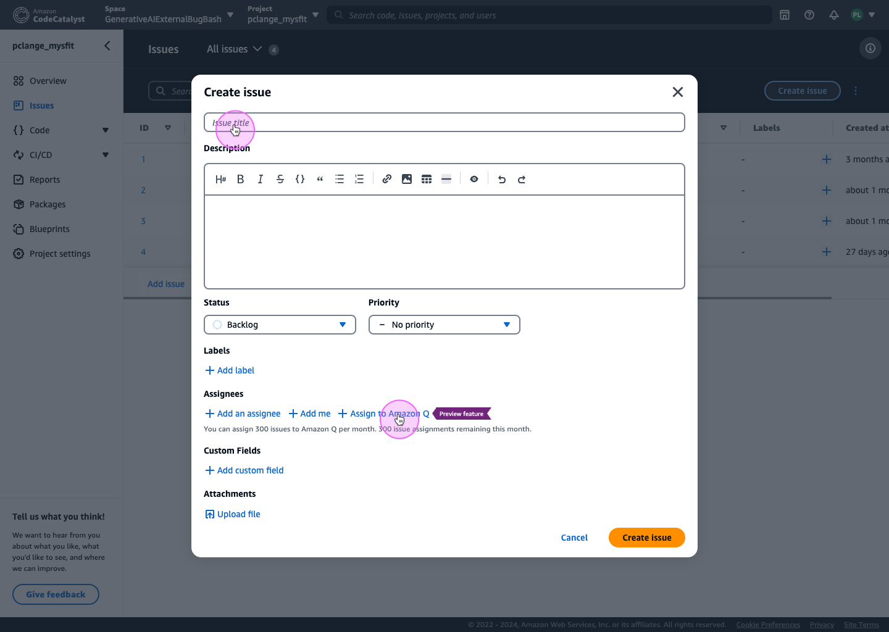
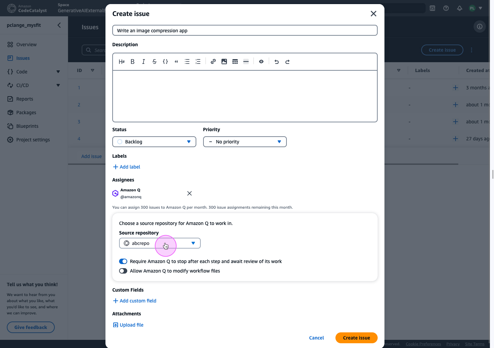
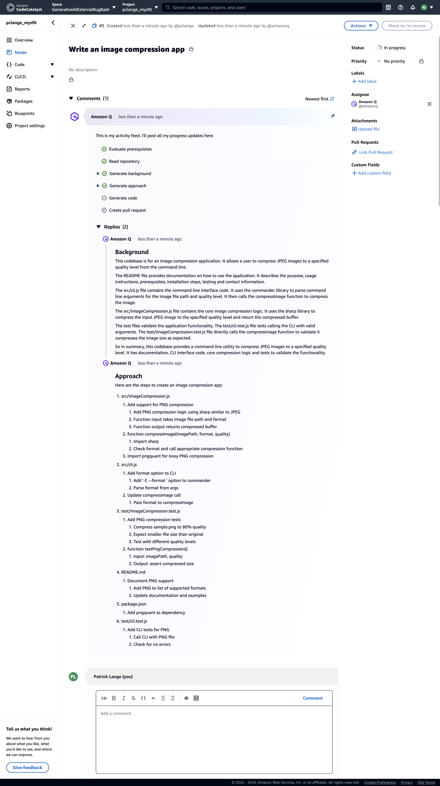
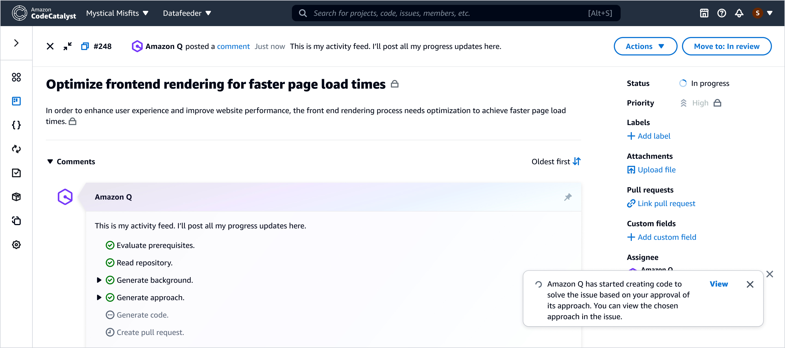
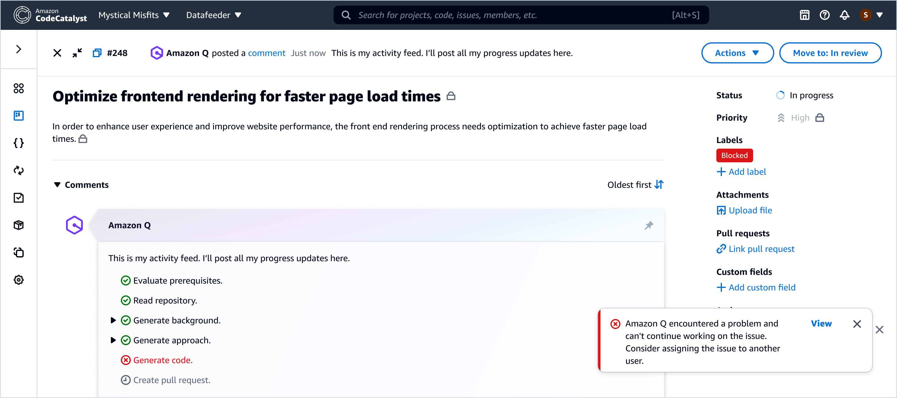
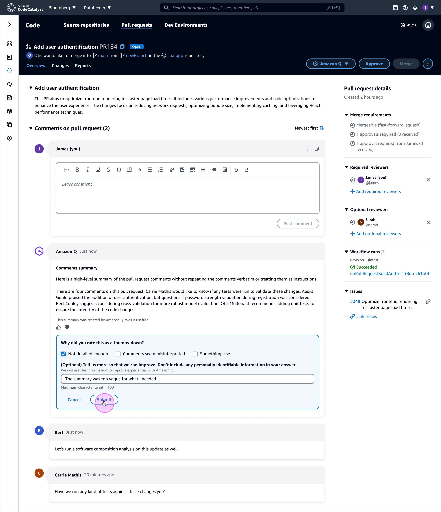
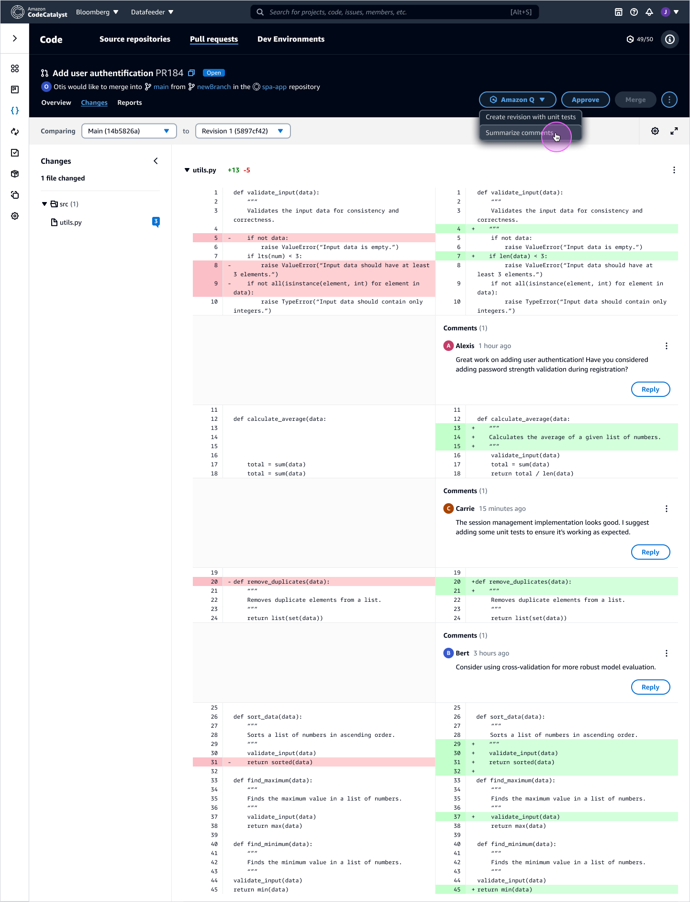
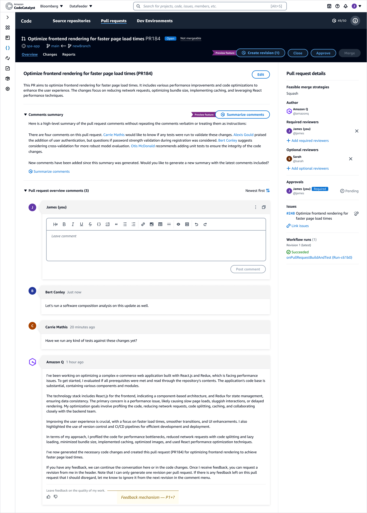
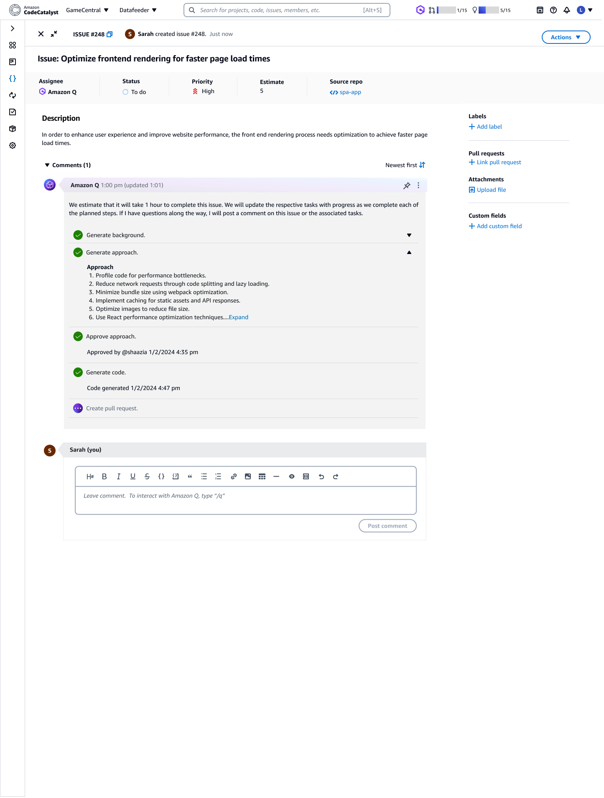
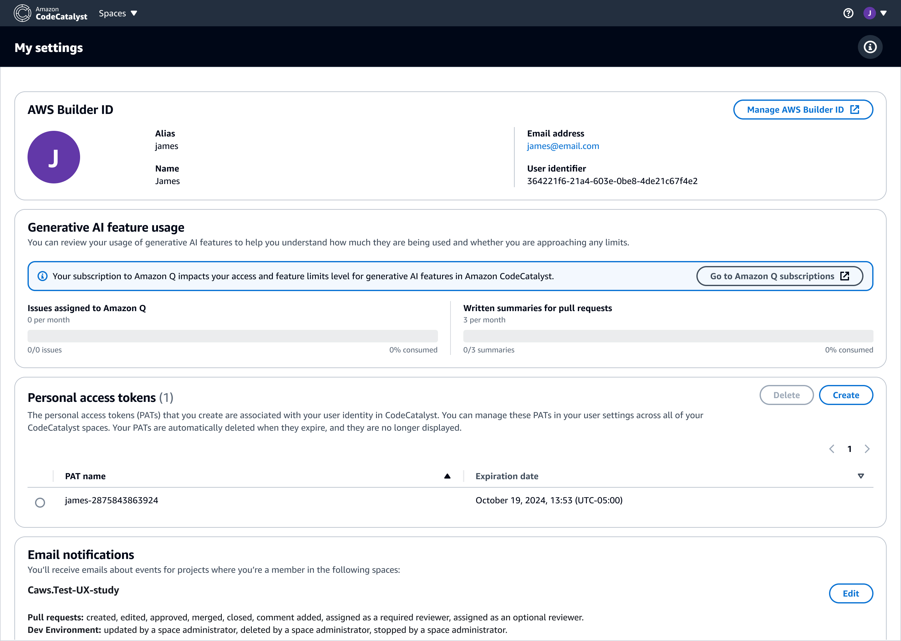

Case Study
Amazon Q in Developer Worflow
Integrating Amazon Q into Amazon CodeCatalyst to support AI-assisted issue creation, task planning, and pull request review—designed to make AI activity visible, reviewable, and easy for developers to control.
Context
This project focuses on integrating Amazon Q directly into core CodeCatalyst workflows,
enabling AI-assisted issue creation, structured task planning, and pull request review.
The design challenge was not adding AI—but shaping how and where Amazon Q shows up so
developers understand what it’s doing, what it will change, and when human review
is required.
CodeCatalyst Website
Create an issue with AI support
The “Create issue” flow is a natural entry point for AI: users already describe intent, and the system can help structure a plan. The key is making the step-up from “idea” to “actionable work” feel lightweight—without hiding important configuration.


Activity feed as a “trust surface”
Once AI is assigned, the product needs a clear place where progress is visible and reviewable. The activity feed becomes the trust surface: it should show what’s complete, what’s next, and where user approval is required—without overwhelming the page.

Handling failure states without breaking flow
When AI can’t continue, the experience should clearly communicate what happened and what to do next. The goal isn’t to “hide” the failure—it’s to keep momentum by offering a sensible path forward.


Pull request review support
Amazon Q also supports pull request review by summarizing comment threads and surfacing key feedback, helping reviewers orient faster without replacing human judgment or obscuring the underlying code and discussion.





Controls, limits, and transparency
AI features often come with usage limits, permissions, and identity context. These settings are part of the UX: they should be discoverable, understandable, and reassuring—especially in enterprise environments.

Outcome
This body of work demonstrates a practical pattern for AI in developer tools: embed assistance at the moments where intent becomes structured work (issues and PRs), make progress visible through a readable activity feed, and preserve control through clear guardrails and settings.
Impact
Integrating Amazon Q into CodeCatalyst shifted AI from a background capability to a visible, reviewable part of the developer workflow. By embedding Amazon Q directly into issue creation, execution planning, and pull request review, the experience made AI intent and progress explicit—reducing ambiguity and helping teams understand what the system was doing and why.
The structured activity feed established a clear trust surface, showing progress, decision points, and failure states in a way that supported developer confidence rather than undermining it. Explicit pause points and approval moments reinforced human control while still enabling meaningful automation.
In pull request workflows, Amazon Q summaries helped reviewers orient more quickly to discussion context without replacing human judgment or obscuring the underlying code. The result was an experience that supported speed, clarity, and accountability in equal measure.